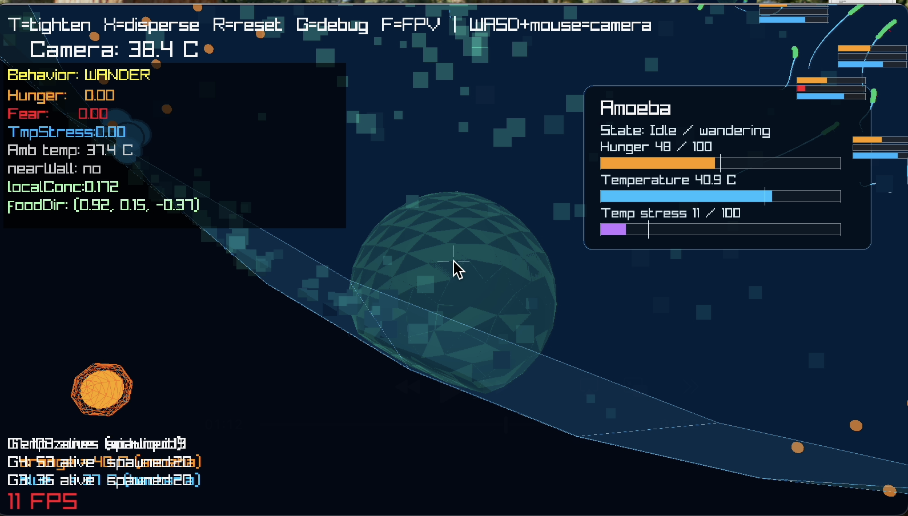
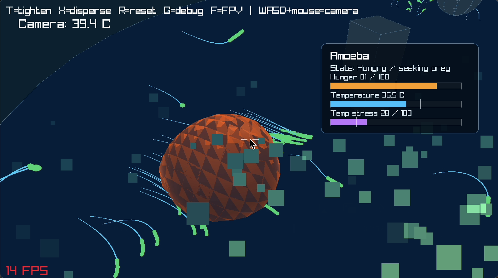
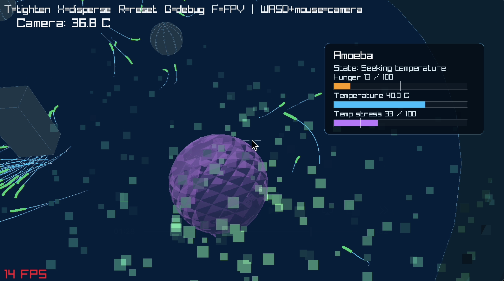
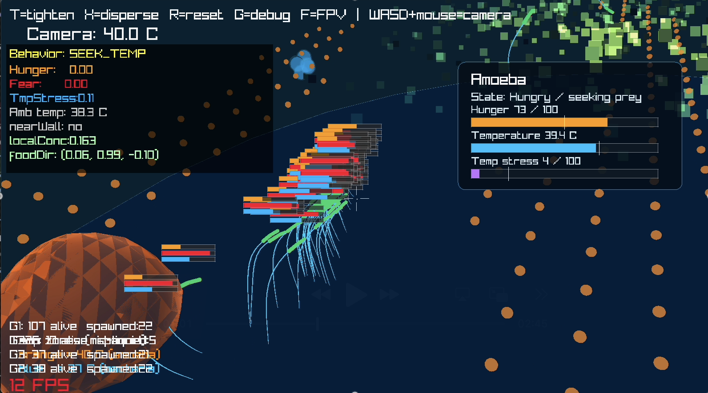
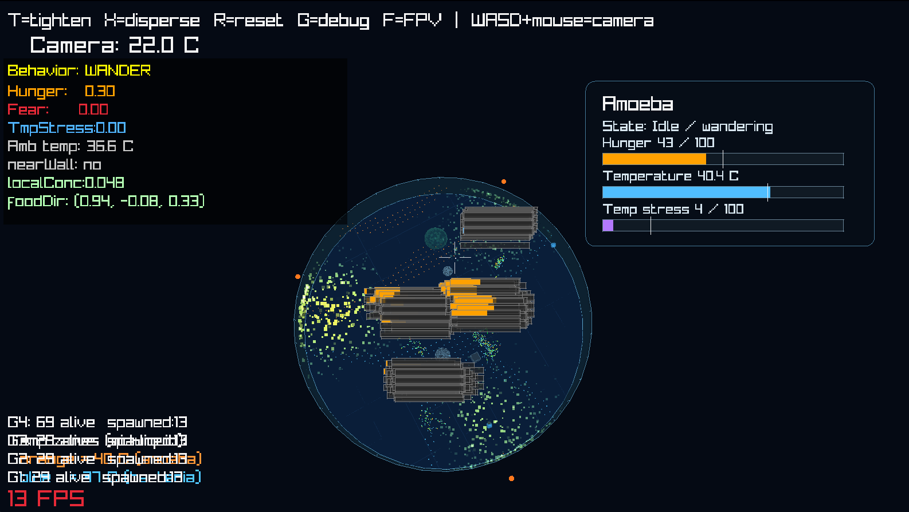

CS 275 · Artificial Life · Spring 2026
An Autonomous Flagellated Ecosystem
Micro-Life 3D is a real-time artificial life simulation of a microscopic aquatic ecosystem rendered in 3D using C++ and Raylib. Six bacterial colonies, an amoeba predator, nutrient fields, thermal gradients, and physical obstacles inhabit a cylindrical petri dish, interacting through physics-based soft-body locomotion, hierarchical behavioral state machines, and Boids-style collective dynamics. Rather than scripting behaviors directly, complex ecological phenomena, such as foraging aggregation, predator movement, colony fission and fusion, and satellite group formation, emerge from simple per-agent rules operating on local sensory information. Each bacterium is a spring-mass soft body propelled by a sinusoidal flagellar traveling wave; its internal state (hunger, fear, temperature stress) drives a priority-ordered behavioral hierarchy, while group membership is managed by a dynamic flocking system with state-dependent detachment, satiation-aware tethering, group merging, and reproduction. The simulation runs at 60 FPS with up to 192 simultaneously active bacteria.
Flagella locomotion, Boid behaviors, fear/hunger state modeling
Amoeba & cocci implementation, predator–prey interaction
Physics engine, fluid mechanics, volume approximation, nutrient fields
Temperature field simulation, predator AI & intention system




